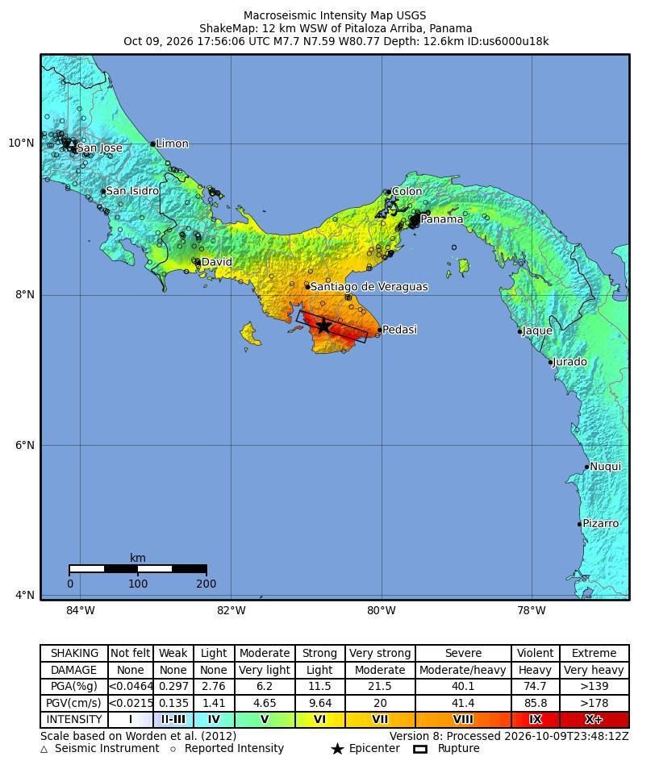
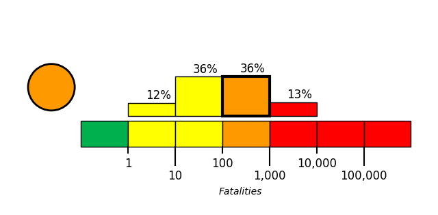
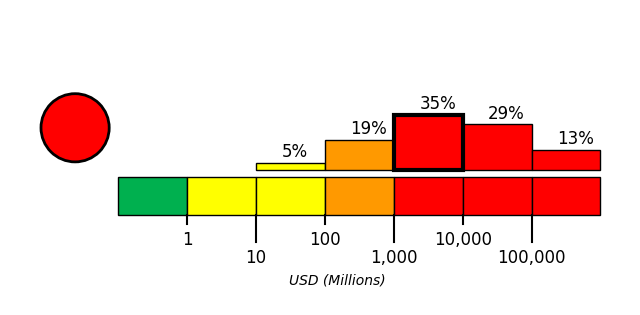

On October 9, 2026, at approximately 12:56 local time (America/Panama; 2026-10-09 17:56 UTC), a magnitude 7.7 earthquake, with a reported depth of 12.647 km, occurred 12 km WSW of Pitaloza Arriba, Panama. The USGS epicenter was at 7.5868° latitude and -80.769° longitude.
Extensive diversity and complexity of tectonic regimes characterizes the perimeter of the Caribbean plate, involving no fewer than four major plates (North America, South America, Nazca, and Cocos). Inclined zones of deep earthquakes (Wadati-Benioff zones), ocean trenches, and arcs of volcanoes clearly indicate subduction of oceanic lithosphere along the Central American and Atlantic Ocean margins of the Caribbean plate, while crustal seismicity in Guatemala, northern Venezuela, and the Cayman Ridge and Cayman Trench indicate transform fault and pull-apart basin tectonics.
Along the northern margin of the Caribbean plate, the North America plate moves westwards with respect to the Caribbean plate at a velocity of approximately 20 mm/yr. Motion is accommodated along several major transform faults that extend eastward from Isla de Roatan to Haiti, including the Swan Island Fault and the Oriente Fault. These faults represent the southern and northern boundaries of the Cayman Trench. Further east, from the Dominican Republic to the Island of Barbuda, relative motion between the North America plate and the Caribbean plate becomes increasingly complex and is partially accommodated by nearly arc-parallel subduction of the North America plate beneath the Caribbean plate. This results in the formation of the deep Puerto Rico Trench and a zone of intermediate focus earthquakes (70-300 km depth) within the subducted slab. Although the Puerto Rico subduction zone is thought to be capable of generating a megathrust earthquake, there have been no such events in the past century. The last probable interplate (thrust fault) event here occurred on May 2, 1787 and was widely felt throughout the island with documented destruction across the entire northern coast, including Arecibo and San Juan. Since 1900, the two largest earthquakes to occur in this region were the August 4, 1946 M8.0 Samana earthquake in northeastern Hispaniola and the July 29, 1943 M7.6 Mona Passage earthquake, both of which were shallow thrust fault earthquakes. A significant portion of the motion between the North America plate and the Caribbean plate in this region is accommodated by a series of left-lateral strike-slip faults that bisect the island of Hispaniola, notably the Septentrional Fault in the north and the Enriquillo-Plantain Garden Fault in the south. Activity adjacent to the Enriquillo-Plantain Garden Fault system is best documented by the devastating January 12, 2010 M7.0 Haiti strike-slip earthquake, its associated aftershocks and a comparable earthquake in 1770.
Moving east and south, the plate boundary curves around Puerto Rico and the northern Lesser Antilles where the plate motion vector of the Caribbean plate relative to the North and South America plates is less oblique, resulting in active island-arc tectonics. Here, the North and South America plates subduct towards the west beneath the Caribbean plate along the Lesser Antilles Trench at rates of approximately 20 mm/yr. As a result of this subduction, there exists both intermediate focus earthquakes within the subducted plates and a chain of active volcanoes along the island arc. Although the Lesser Antilles is considered one of the most seismically active regions in the Caribbean, few of these events have been greater than M7.0 over the past century. The island of Guadeloupe was the site of one of the largest megathrust earthquakes to occur in this region on February 8, 1843, with a suggested magnitude greater than 8.0. The largest recent intermediate-depth earthquake to occur along the Lesser Antilles arc was the November 29, 2007 M7.4 Martinique earthquake northwest of Fort-De-France.
The southern Caribbean plate boundary with the South America plate strikes east-west across Trinidad and western Venezuela at a relative rate of approximately 20 mm/yr. This boundary is characterized by major transform faults, including the Central Range Fault and the Boconó-San Sebastian-El Pilar Faults, and shallow seismicity. Since 1900, the largest earthquakes to occur in this region were the October 29, 1900 M7.7 Caracas earthquake, and the July 29, 1967 M6.5 earthquake near this same region. Further to the west, a broad zone of compressive deformation trends southwestward across western Venezuela and central Colombia. The plate boundary is not well defined across northwestern South America, but deformation transitions from being dominated by Caribbean/South America convergence in the east to Nazca/South America convergence in the west. The transition zone between subduction on the eastern and western margins of the Caribbean plate is characterized by diffuse seismicity involving low- to intermediate-magnitude (M<6.0) earthquakes of shallow to intermediate depth.
The plate boundary offshore of Colombia is also characterized by convergence, where the Nazca plate subducts beneath South America towards the east at a rate of approximately 65 mm/yr. The January 31, 1906 M8.5 earthquake occurred on the shallowly dipping megathrust interface of this plate boundary segment. Along the western coast of Central America, the Cocos plate subducts towards the east beneath the Caribbean plate at the Middle America Trench. Convergence rates vary between 72-81 mm/yr, decreasing towards the north. This subduction results in relatively high rates of seismicity and a chain of numerous active volcanoes; intermediate-focus earthquakes occur within the subducted Cocos plate to depths of nearly 300 km. Since 1900, there have been many moderately sized intermediate-depth earthquakes in this region, including the September 7, 1915 M7.4 El Salvador and the October 5, 1950 M7.8 Costa Rica events.
The boundary between the Cocos and Nazca plates is characterized by a series of north-south trending transform faults and east-west trending spreading centers. The largest and most seismically active of these transform boundaries is the Panama Fracture Zone. The Panama Fracture Zone terminates in the south at the Galapagos rift zone and in the north at the Middle America trench, where it forms part of the Cocos-Nazca-Caribbean triple junction. Earthquakes along the Panama Fracture Zone are generally shallow, low- to intermediate in magnitude (M<7.2) and are characteristically right-lateral strike-slip faulting earthquakes. Since 1900, the largest earthquake to occur along the Panama Fracture Zone was the July 26, 1962 M7.2 earthquake.
References for the Panama Fracture Zone: Molnar, P., and Sykes, L. R., 1969, Tectonics of the Caribbean and Middle America Regions from Focal Mechanisms and Seismicity: Geological Society of America Bulletin, v. 80, p. 1639-1684.

Building damage was concentrated in the central provinces of Veraguas, Herrera and Los Santos, while authorities were assessing conditions in areas near the epicenter [1][4]. In Penonomé, Coclé province, damage was reported to the Cathedral of San Juan Bautista, the governor’s administration building and Hotel Dos Continentes; the extent of some early reports had not been independently verified [1][11]. Further reports and video indicated that buildings collapsed in Penonomé, including a historic building’s tower or spire and balconies of residential or apartment buildings; a church was damaged, and part of a hotel was reported collapsed [6][7][8][9][10]. Buildings also collapsed near the epicenter [2][3]. Reports differed on Panama City: initial assessments and officials reported no damage there, while a photograph caption identified rescue workers beside a damaged building in the capital [1][4][5].
Roads collapsed or were damaged in parts of Panama, including the central provinces of Herrera, Veraguas and Los Santos; reports also described road damage across the country’s central area [12][16][19]. Tocumen International Airport temporarily suspended operations for safety checks, with both runways reported closed; flights were diverted, and operations later began restarting, with the airport reported to have lifted its suspension and reopened [13][14][10][15][21]. Service on Metro Lines 1 and 2 in Panama City was temporarily suspended for safety reasons [20][15]. The Panama Canal continued operating normally, and shipping through the waterway was reported unaffected; the Panama Canal Authority activated emergency protocols and had technical teams inspect facilities for possible damage [15][18][19]. Cobre Panama copper mine also reported normal operations [10][17].
Residents evacuated buildings and gathered in streets and open areas in Panama City after strong shaking; reports also described evacuations from schools, homes, and other buildings across the country. Hospitals were evacuated, and Tocumen International Airport activated evacuation and safety protocols, temporarily suspending operations before reopening later Friday. [9][6][15][26][27][28][29] The government mobilized emergency personnel and resources, while the Civil Protection Service investigated damage and reported impacts concentrated in Veraguas, Herrera, and Los Santos provinces. Initial coverage reported no confirmed fatalities, though the extent of damage and potential casualties remained uncertain as assessments continued. [23][24][25][26][30] The earthquake disrupted water supplies and caused power outages across six provinces; flights were briefly halted, while Panama Canal passage continued uninterrupted. [22][23][10] Tsunami warnings were issued for Panama and other countries in the region and were later lifted. [31][15]
USGS PAGER tool estimated the fatalities to be in the orange alert level, which is most likely between 100 and 1,000 with a probability of 36%.
USGS PAGER tool estimated the economic loss to be in the red alert level, which is most likely between 1,000 and 10,000 million dollars with a probability of 35%.

